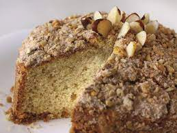

Cuca de castanha do Brasil

Ingredientes
Farofa
- 80 g de açúcar refinado
- 50 g de castanha do Brasil triturada
- 65 g de farinha de trigo
- 1 colher (café) de canela em pó
- 50 g de manteiga
Massa
- 130 g de açúcar refinado
- 120 ml de leite
- 200 g de farinha de trigo
- 1 ovo
- 200 g de farinha de trigo
- 40 g de manteiga
- 10 g de fermento químico
Modo de preparo
Farofa
- Misturar todos os ingredientes e reservar.
Massa
- Misturar todos os ingredientes e acrescentar metade da farofa.
- Despejar em uma fôrma untada e enfarinhada e cobrir a massa com o restante da farofa.
- Assar em forno pré-aquecido a 160º C por 30 minutos.
Observação:
Pode-se substituir a castanha do Brasil por amêndoas.